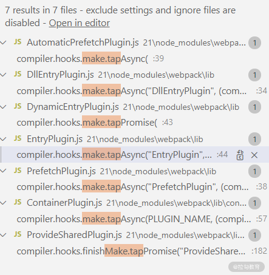
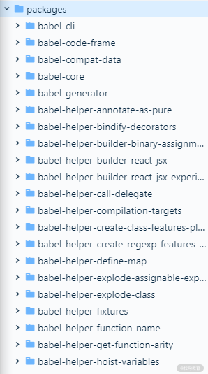
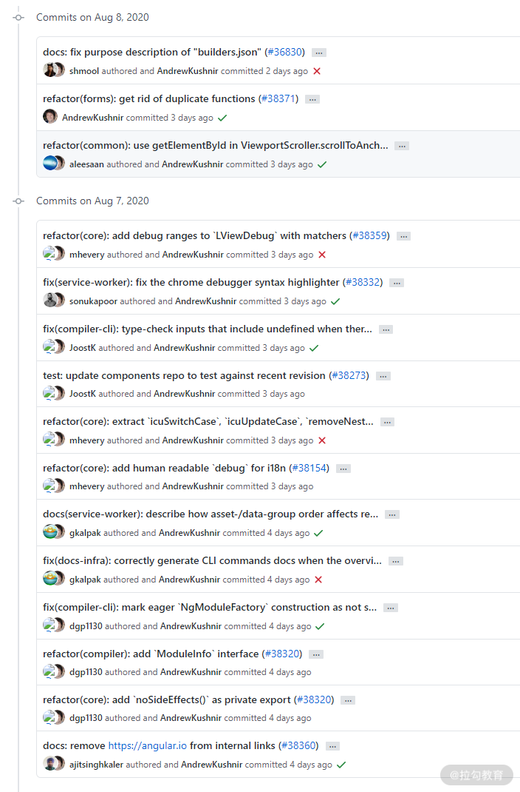

要点：
Webpack源码解析
Node.js 的出现，越来越多前端自动化工具涌现出来，包括早期的 Grunt、Gulp 以及现在流行的 webpack。随着这些工具的功能愈发强大，其重要性也在不断提升，成熟的框架都已经将这些工具封装成专用的命令行工具，比如 angular-cli 和 vue-cli。这一课时我们将继续承接前面课程的“硬核”风格，通过分析 webpack(5.0.0-beta.23) 的源码来深入理解其原理。
webpack 有两个执行入口，分别是通过命令行调用的 bin/webpack.js，以及直接在代码中引用的 lib/webpack.js。我们避开命令参数解析以及进程调用的过程来分析 lib/webpack.js，下面是部分源码（省去了数组型配置及 watch 功能）。
1 | // lib/webpack.js |
从源码中可以看到，webpack() 函数内部有 3 个重要的操作：校验配置项、创建编译器、执行编译。
一、校验配置项
校验配置项是通过调用 validateSchema() 函数来实现的，这个函数的内部其实是调用的 schema-utils 模块的 validate () 函数 ，validate() 函数支持通过 JSONSchema 规则来校验 json 对象。这些 JSONSchema 规则保存在 schemas/WebpackOptions.json 文件中，对应代码中的 webpackOptionsSchema 变量。
这里简单介绍一下 JSONSchema，它是通过 JSON 文件来描述 JSON 文件 ，可以用来校验 JSON 对象、生成 mock 数据及描述 JSON 对象结构。下面是一个对 output 参数的部分校验规则。
1 | "Output": { |
从 “type”: “object” 可以看到 Output 是一个对象，它拥有属性 Path，而这个 P ath 类型定义在 definitions 对象的 Path 属性中，通过 “type”: “string” 可以看到，它是一个字符串类型。WebpackOptions.json 文件内容比较多，有 3000 多行，这里就不多介绍了，有兴趣的同学可以仔细研究。
一句话概括，validateSchema() 函数通过 JSONSchema 对 options 进行校验，如果不符合配置规则，则退出并在控制台输出格式化的错误信息。这样就能避免因为选项参数不正确而导致程序运行出错。
二、创建编译器
创建编译器操作是在 compiler.compile() 函数中调用 createCompiler() 函数来实现的，该函数会返回一个 Compiler 实例。createCompiler() 函数源码如下：
1 | // lib/webpack.js |
在 createCompiler() 函数内部可以看到，首先会通过 getNormalizedWebpackOptions() 函数将默认的配置参数与自定义的配置参数 rawOptions 进行合成，赋值给变量 options。applyWebpackOptionsBaseDefaults() 函数则将程序当前执行路径赋值给 options.context 属性。
经过以上处理之后，变量 options 才会作为参数传递给类 Compiler 来生成实例。在构造函数中，实例的很多属性进行了初始化操作，其中比较重要的是 hooks 属性。下面是截取的部分源码：
1 | // lib/Compiler.js |
为了防止 hooks 属性被修改，这里使用 Object.freeze() 函数来创建对象。简单介绍一下 object.freeze() 函数，它可以冻结一个对象。一个被冻结的对象再也不能被修改了；冻结了一个对象则不能向这个对象添加新的属性，不能删除已有属性，不能修改该对象已有属性的可枚举性、可配置性、可写性，以及不能修改已有属性的值。此外，冻结一个对象后该对象的原型也不能被修改。
这里一共创建了 4 种类型的钩子（hook），它们的名称和作用如下：
- SyncHook（同步钩子），当钩子触发时，会依次调用钩子队列中的回调函数；
- SyncBailHook（同步钩子），当钩子触发时，会依次调用钩子队列中的回调函数，如果遇到有返回值的函数则停止继续调用；
- AsyncSeriesHook（异步串行钩子），如果钩子队列中有异步回调函数，则会等其执行完成后再执行剩余的回调函数；
- AsyncParallelHook（异步并行钩子），可以异步执行钩子队列中的所有异步回调函数。
下面一段代码是钩子函数的简单用法。通过 new 关键字创建钩子实例，然后调用 tap() 函数来监听钩子，向 hook 的钩子队列中添加一个回调函数 。 当执行 hook.call() 函数时，会依次调用队列中的回调函数，并将参数传递给这些回调函数 。 需要注意的是， 参数的数量必须与实例化的数组长度一致。在下面的例子中，只能传递 1 个参数。
tapable 模块提供了十多种钩子，这里就不一一详细介绍了，我们只要知道它实现了一些特殊的订阅机制即可，对钩子有兴趣的同学可以参看其 文档。
1 | const { SyncHook } = require('tapable'); |
接着继续往下看，会发现这样一行代码。
1 | // lib/webpack.js |
这种调用插件（plugin）的 apply() 函数的写法在 webpack 中很常见，主要作用就是监听 compiler 钩子事件，或者说是向钩子队列中插入一个回调函数，当对应的钩子事件触发时调用。
钩子初始化完成后会调用 3 个钩子事件：
1 | // lib/webpack.js |
其中，process() 函数会根据不同的执行环境引入一些默认的插件并调用它的 apply() 函数，比如 Node 环境下会引入下面的插件：
1 | // lib/WebpackOptionsApply.js |
至此，编译器已经创建完成。小结一下创建编译器步骤的主要逻辑，首先会将配置参数进行修改，比如加入一些默认配置项；然后创建一个编译器实例 compiler，这个实例的构造函数会初始化一些钩子；最后就是调用插件的 apply() 函数来监听钩子，同时也会主动触发一些钩子事件。
三、执行编译
调用 compiler.compile() 函数标志着进入编译阶段，该阶段非常依赖钩子， 代码跳跃比较大，理解起来会有一定难度 。下面是 compile() 函数的部分代码：
1 | // lib/Compiler.js |
首先是触发了 compiler.hooks.compile 钩子，触发后，一些插件将进行初始化操作，为编译做好准备，比如 LoaderTargetPlugin 插件将会加载需要的加载器。
调用 newCompilation() 函数则会创建了一个 Compilation 实例。注意，这里的 Compilation 和前面创建的 Compiler 是有区别的：Compiler 是全局唯一的，包含了配置参数、加载器、插件这些信息，它会一直存在 webpack 的生命周期中；而 Compilation 包含了当前模块的信息，只是代表一次编译过程。
在创建 compilation 完成后会触发 compiler.hooks.thisCompilation 钩子和 compiler.hooks.compilation，激活 JavaScriptModulesPlugin 插件的监听函数，从而加载 JavaScript 的解析模块 acorn 。
1 | // lib/Compiler.j s |
在 compiler.compile() 函数中触发 compiler.hooks.make 钩子标志着编译操作正式开始。那么哪些函数监听了 make 钩子呢？通过搜索代码可以发现有 7 个插件监听了它。

监听了 make 钩子的插件
其中 EntryPlugin 插件负责分析入口文件，下面是截取的部分代码：
1 | // lib/EntryPlugin.js |
EntryPlugin 插件中调用了 compilation 对象的 addEntry() 函数，该函数中又调用了 _addEntryItem() 函数将入口模块添加到模块依赖列表中，部分源码如下：
1 | _addEntryItem(context, entry, target, options, callback) { |
在 addModuleChain() 函数中会调用 compilation 的 handleModuleCreation() 函数，该函数代码比较多，其中会调用 compilation 的 buildModule() 函数来构建模块。
模块构建完成过后，通过 acorn 生成模块代码的抽象语法树，根据抽象语法树分析这个模块是否还有依赖的模块，如果有则继续解析每个依赖的模块，直到所有依赖解析完成，最后合并生成输出文件。这个过程和前面几讲提到的编译器执行过程类似，就不再赘述了。
四、总结
这一课时从源码层面分析了 webpack 的工作原理，webpack 的执行过程大体上可以分为 3 个步骤，包括：检验配置项、创建编译器、执行编译。
在 检验 配置项时使用了 JSONSchema 来校验配置参数。在创建编译器时，用到了 tapable 模块提供的钩子机制，通过触发适当的钩子事件来让对应的插件进行初始化。
在执行编译阶段，以 compiler.hooks.make 钩子事件为起始点，触发入口文件的解析工作，并调用加载器对资源进行处理，然后构建成抽象语法树，将最终的抽象语法树转换成目标文件并输出到配置项指定的目录。
最后布置一道思考题：尝试一下 tapable 模块的各种钩子事件，分析比较一下它们的使用区别。
合理搭建项目
通过上一课时的学习，我们分析了前端构建工具 webpack 的底层原理，在理解原理之后再来探索构建工具的具体应用——如何合理搭建前端项目。当然，前端项目搭建并不只是使用构建工具这么简单，本课时我们将从项目组织、代码规范 2 个方面来进行分析。
一、项目组织
考虑这样一个场景，在开发项目 projectA 的时候，发现其中的 codeX 也可以用于项目 projectB，最简单直接的处理方式就是把 codeX 的代码直接复制到 projectB 下，按照“三次原则”（三次原则是指同一段代码被使用到 3 次时再考虑抽象）这种处理方式没什么问题。但如果此时项目 projectC 和 projectD 也会用到 codeX，那么这种方式维护起来会很麻烦。
有经验的工程师会想到将 codeX 发布成模块，作为依赖模块引入所需的项目中。此时对于 codeX 会涉及两种组织代码的方式：multirepo 和 monorepo。
multirepo
multirepo 就是将项目中的模块拆分出来，放在不同的仓库中进行独立管理。例如，用于 Node.js 的 Web 框架 Koa，它依赖的模块 koa-convert 和 koa-compose 分别拆分成了两个仓库进行管理。
这种方式的好处是保证仓库的独立性，方便不同团队维护对应的仓库代码，可以根据团队情况选择擅长的工具、工作流等。
但这种方式也会存在一些问题，具体如下。
- 开发调试及版本更新效率低下。比如在仓库 A 用到的仓库 B 中发现了一个 bug，就必须到仓库 B 里修复它、打包、发版本，然后再回到仓库 A 继续工作。在不同的仓库间，你不仅需要处理不同的代码、工具，甚至是不同的工作流程；还有，你只能去问维护这个仓库的人，能不能为你做出改变，然后等着他们去解决。
- 团队技术选型分散。不同的库实现风格可能存在较大差异（比如有的库依赖 Vue，有的依赖 React），还有可能会采用不同的测试库及校验规则，维护起来比较困难。
而 monorepo 方式恰好就能解决这些问题。
monorepo
monorepo 就是将所有相关的模块放在同一个项目仓库中。这种方式在管理上会更加方便，项目所有代码可以使用统一的规范及构建、测试、发布流程。
很多著名的开源项目都采取了这种管理方式，比如开源项目 babel，它依赖的模块都放在了 packages 目录下。

babel 的依赖模块
通过查看 babel 项目，发现根目录下有一个 lerna.json 的配置文件，这是开源工具 lerna的配置文件。lerna 是一个用于管理带有多个包的 JavaScript 项目工具，用 lerna 管理的项目会有 3 个文件目录：packages 目录、learna.json 文件和 package.json 文件。通过 lerna 命令行工具在初始化项目的时候就可以创建它们。
lerna 支持两种模式，分别是 Fixed/Locked 和 Independent 模式。
Fixed/Locked 模式为默认模式，babel 采用的就是这种模式，该模式的特点是，开发者执行 lerna publish 后，lerna 会在 lerna.json 中找到指定 version 版本号。如果这一次发布包含某个项目的更新，那么会自动更新 version 版本号。对于各个项目相关联的场景，这样的模式非常有利，任何一个项目大版本升级，其他项目的大版本号也会更新。
Independent 模式顾名思义，各个项目都是相互独立。开发者需要独立管理多个包的版本更新。也就是说，我们可以具体到更新每个包的版本。每次发布，lerna 会配合 Git，检查相关包文件的变动，只发布有改动的 package。
虽然众多开源项目采用了 monorepo，但它也并不是最完美的代码组织方式，也会带来一些问题，比如由于将多个模块集中在一个仓库中会导致仓库体积变大，目录结构也会变得更复杂。而 monorepo 也需要额外的工具来管理各个模块，这意味着相对 multirepo 而言会有一定的学习成本。
二、代码规范
什么样的代码才是好代码？不同的工程师可能给出不同的答案，比如：
- 少用全局变量
- 高内聚、低耦合
- 遵循单一原则
- 拥有注释说明
切换角度思考会帮助我们得到更全面的答案：从人的角度考虑，维护代码的开发者会不断地变更；从时间的角度考虑，代码会不断地被修改。我们可以总结一个最简单实用的答案：风格一致。 “风格一致”就是让参与项目开发的工程师形成一种开发上的契约，从而降低维护成本。要达到这个目的，我们可以从代码编写和代码管理两个方向入手，分别对应编写规范和提交规范。
编写规范
网上关于 HTML、JavaScript、CSS 编写规范（也称编写风格）之类的文档资料很多，一般大型互联网公司都会制定自己的编写规范，比如 Google 的 JavaScript 风格指南、 Airbnb 风格指南，而对应的工具也不少。以 JavaScript 为例，比如 JSLint、JSHint、JSCS、ESLint 等多种规则校验工具。
不管我们在团队中制定怎样的编写规范，只要把握好下面 3 个核心原则，就能制定出合理的编写规范。
- 可执行。制定编写规范首先要保证的就是规范的可执行性。制定好规范如果只能靠工程师的自觉性去执行，靠代码审核去检查，那么执行效率会很低。所以建议编写规范中的每一条规则都能有对应的校验工具规则与之对应。
- 可配置。代码的可读性有时候是一个比较主观的问题，比如空格缩进问题，有的工程师认为 2 个空格缩进可以查看更多代码内容，而有的会认为 4 个空格缩进层次感更强。使用具有丰富配置项的代码校验工具就可以很轻松地解决这些分歧。
- 可扩展。这一点也是对于校验工具的要求，即当校验工具的已有配置规则无法支持项目需求时，可以自行编写插件来扩展校验规则。
最常用的 ESlint 就可以满足可配置、可扩展的原则，它的核心功能是通过一个叫 verify() 的函数来实现的，该函数有两个必传参数：要验证的源码文本和一个配置对象（通过准备好的配置文件加命令行操作会生成配置）。该函数首先使用解析器生成抽象语法树（AST），同时为规则中所有的选择器添加监听事件，在触发时执行；然后从上到下遍历 AST。在每个节点触发与该节点类型同名的一个事件（即 “Identifier”“WithStatement” 等），监听函数校验完相关的代码之后把不符合规则的问题推送到 lintingProblems 数组中返回。
提交规范
虽然在开发过程中，每次在使用 Git 提交代码时都会编写提交消息（Commit Message），但提交规范仍然是一个很容易被忽视的点。而良好的提交规范和编写规范一样，也能较大地提升代码的可维护性，一方面能保证在代码回退时能快速找到对应的提交记录，另一方面也可以直接将提交消息生成修改日志（Change Log）。

Angular 的提交日志
虽然 Git 自带 template 功能，这个功能可以定义一个提交消息的模板文件，然后通过 git config 命令指向这个模板文件。这样在每次提交的时候就会使用默认的编辑器打开一个模板文件，编辑对应信息后保存即可。但不具有强制性，推荐使用工具 @commitlint/cli 和 husky。commitlint 可以设置提交消息模板并校验，而 husky 可以设置 pre-commit 钩子，在提交代码时调用 commitlint 进行强制校验，避免生成不符合规范的提交消息。
下面的 husky 配置文件会在提交之前执行命令 npm test，在生成提交消息时执行 commitlint。
1 | // .huskyrc |
从上面的例子可以看到，husky 同构监听 git 钩子，不仅可以校验提交消息，还可以调用自定义的 npm 脚本进行代码校验或执行测试代码。随着项目不断增大，对整个项目上运行 lint 或 test 会变得非常耗时，我们一般只想对更改的文件进行检查，这时候可以借助 lint-staged。
下面是 Vue 的 lint-staged 相关配置。它表示对于 js 后缀的文件执行 eslint --fix 命令来校验和修复代码 ，通过之后再进行 git add 添加到暂存区。
1 | // package.json |
三、总结
这一课时站在前端工程的角度，从项目组织和代码规范两个方面分析了如何搭建可维护性的前端项目。
- 在项目组织上，对于相关性低的模块可以采用 multirepo 方式进行独立管理，相关度高的模块则可以采用 monorepo 方式对其进行集中管理。
- 在制定代码规范时，对于编写规范，尽量做到可执行、可配置、可扩展，对于提交规范，可以选择适当的工具，比如 commitlint、husky 来保证提交消息的规范化和可读性。
Tips: Please indicate the source and original author when reprinting or quoting this article.